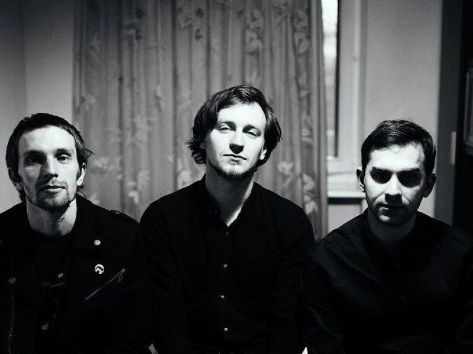

Молчат дома
В современной Росси существует достаточно больше множестово пост–панк групп. Мы же рассмотрим только самые популярные.
| Молчат дома |
Одной из самых популярных пост-панк групп является группа Molchat doma. Молчат Дома — белорусская рок–группа из Минска, сочетающий в своём творчестве пост–панк, синти–поп и нью–вэйв.
Музыкальный проект «Молчат Дома» был образован в Минске в 2017 году. Основателями являются Егор Шкутко и Роман Комогорцев.
В апреле 2017 года был выпущен дебютный альбом под названием «С крыш наших домов», в который вошли 9 треков. Через некоторое время группа выпускает сингл «Коммерсанты». В 2018 году в свет выходит альбом, получивший название «Этажи», который вошел в двадцатку лучших альбомов 2018 года по версии британских критиков.
Состав:
|  Ploho |
Ploho — новосибирская пост–панк группа, основанная в 2013 году.За год существования, группа Ploho смогла в лучших традициях стиля преподнести в окружающее иллюзорное пространство свой бескомпромиссный взгляд на привычный порядок вещей, обратив его своим воздействием в строгий, линейный ритуал из холодных эмоций и бессознательных действий социума в Эпоху материального гипноза и экзистенциального страха, застрявшего в каждом из нас, живущих в утренних трамваях, заводах, телевизорах и ничтожных квадратных метрах жилищных площадей. Сегодня может быть очень хорошо, если завтра не будет так ploho…
Состав:

 Слепые ребра |
Слепые ребра — популярная в узких кругах севастопольская пост–панк группа. Ребята играют очень душевную и атмосферную музыку, за что уже успели полюбится немалому количеству людей. Группа была основана 5–го марта 2020 года.
Состав: